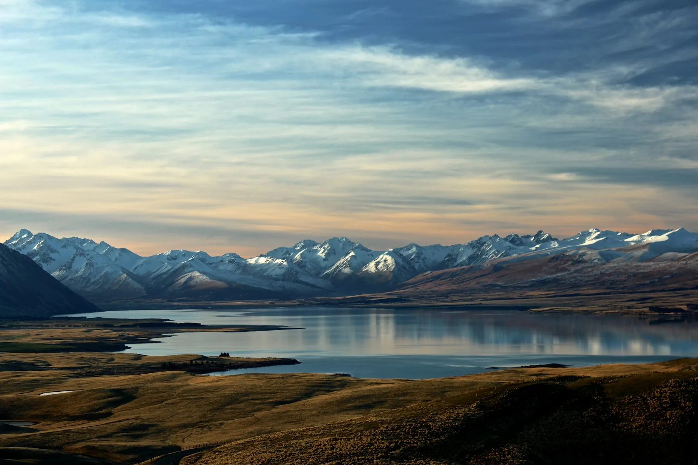
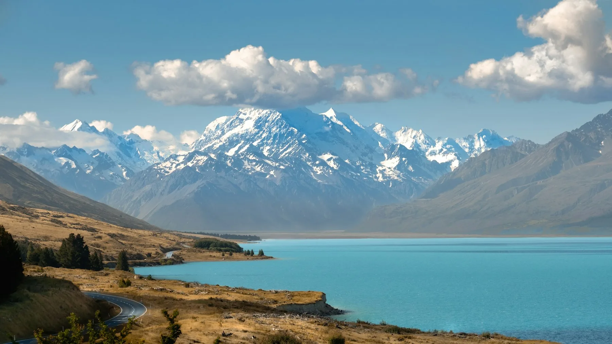
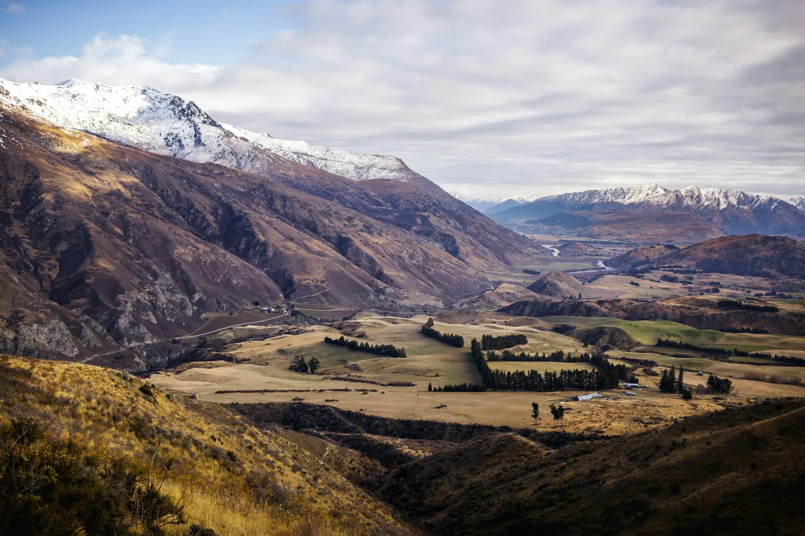
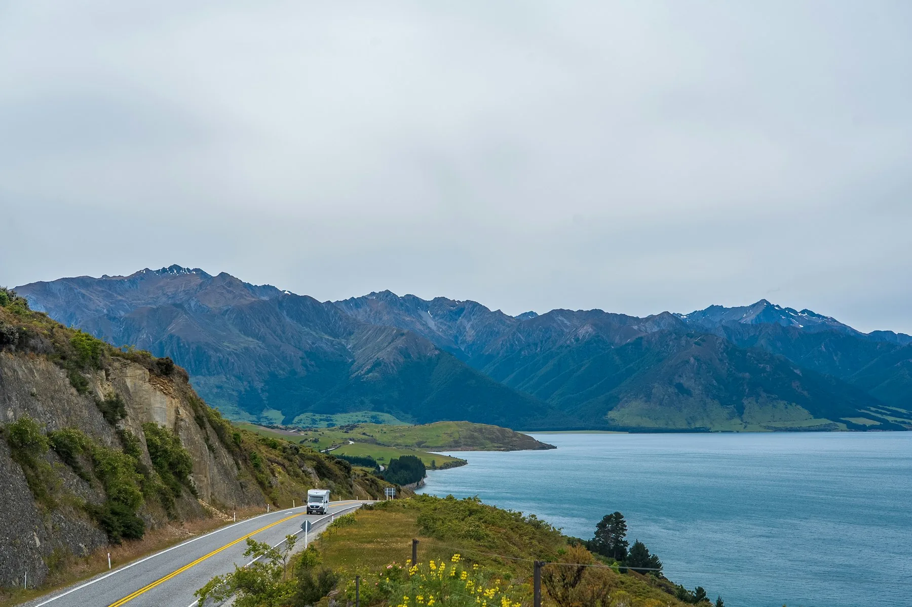
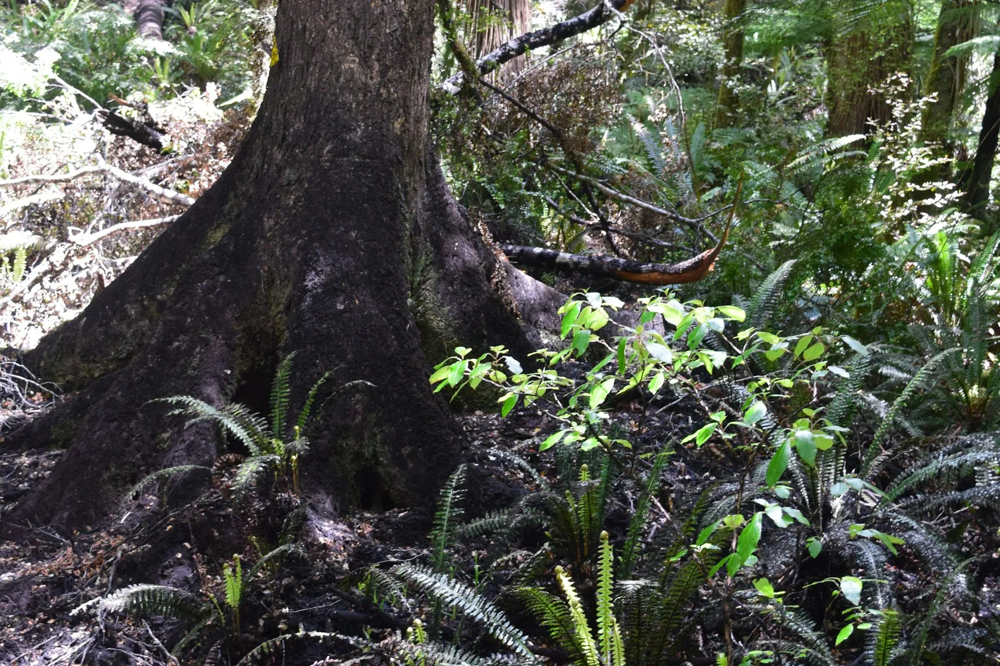

Destination
New Zealand
Geothermal valleys, glacial lakes, and some of the last skies dark enough to see the galaxy without trying.
Geothermal valleys, glacial lakes, and some of the last skies dark enough to see the galaxy without trying.

After travelling through the heart of New Zealand’s North Island, you begin to realise that Rotorua, Waimangu, Taupō, and Tongariro are not four separate attractions. They are different…

Some countries are recognized by a single landmark. France by the Eiffel Tower. Australia by the Sydney Opera House. But when most people picture New Zealand, they think of something…

This route isn’t just a collection of famous sights. Each day builds naturally on the last. The lakes become more vivid, the mountains draw closer, and before long you find yourself…

When people talk about New Zealand’s South Island, they usually think of its lakes, mountains, and fjords. Yet almost everyone who has been here remembers more than just the…

In just one week on New Zealand’s South Island, you’ll experience such a dramatic variety of landscapes that it often feels as though you’ve crossed the borders of several different…

During the day, you admire the turquoise waters of Lake Tekapo, the snow-covered peaks of the Southern Alps, and the road leading toward Aoraki, New Zealand’s highest mountain. It feels…

New Zealand’s forests have a strange way of surprising first-time visitors.